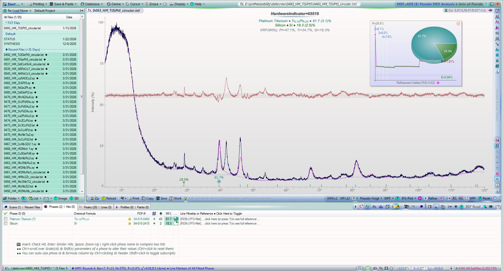
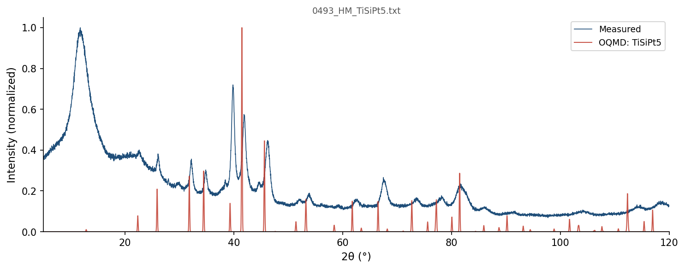
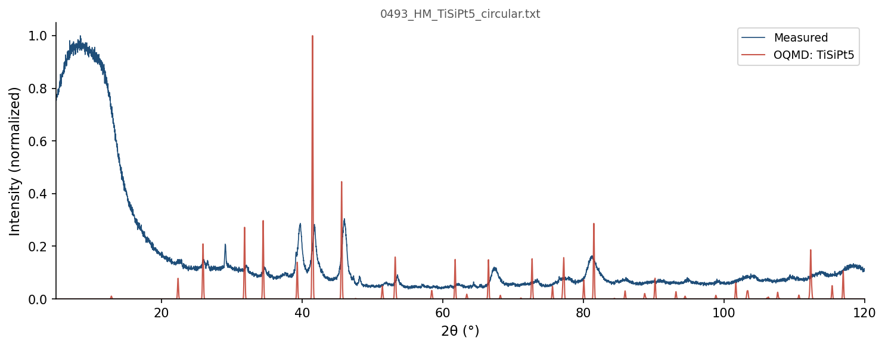

| Element | Expected (mol frac) | Measured (mol frac) | Δ (mol frac) | Δ (%) |
|---|---|---|---|---|
| Pt | 0.7143 | 0.7157 | +0.0014 | +0.14% |
| Si | 0.1429 | 0.1415 | -0.0013 | -0.13% |
| Ti | 0.1429 | 0.1428 | -0.0001 | -0.01% |
400 OQMD entries in the Pt-Si-Ti element system (19 on hull, 96 ICSD-tagged). OQMD: negative = below hull (stable). Sorted most stable first.
| Composition | Stability (meV/atom) | ΔE (meV/atom) | ICSD | Space | Entry | CIF |
|---|---|---|---|---|---|---|
Pt1Ti3 |
-150 | -705.0 | ✓ | Pt-Ti | 18016 | CIF |
Pt3Ti1 |
-138 | -856.9 | ✓ | Pt-Ti | 30986 | CIF |
Pt1Si1Ti1 |
-128 | -1022.8 | Pt-Si-Ti | 1272362 | CIF | |
Pt2Si1 |
-111 | -722.6 | ✓ | Pt-Si | 14060 | CIF |
Pt1Ti1 |
-69 | -946.4 | Pt-Ti | 1235921 | CIF | |
Pt8Ti1 |
-67 | -447.5 | ✓ | Pt-Ti | 18017 | CIF |
Si2Ti1 |
-53 | -580.6 | ✓ | Si-Ti | 21396 | CIF |
Si3Ti5 |
-37 | -798.5 | ✓ | Si-Ti | 8387 | CIF |
Si1Ti1 |
-36 | -790.8 | ✓ | Si-Ti | 8102 | CIF |
Pt5Ti3 |
-35 | -955.8 | ✓ | Pt-Ti | 90712 | CIF |
Pt1Si1 |
-33 | -671.0 | Pt-Si | 1907910 | CIF | |
Si4Ti5 |
-19 | -813.0 | ✓ | Si-Ti | 7987 | CIF |
Pt5Si1Ti1 |
-16 | -839.8 | Pt-Si-Ti | 2146105 | CIF | |
Pt8Si1Ti2 |
-5 | -850.8 | Pt-Si-Ti | 2149228 | CIF | |
Si1Ti2 |
-1 | -711.9 | Si-Ti | 1277024 | CIF | |
Si1Ti3 |
-1 | -534.7 | ✓ | Si-Ti | 21395 | CIF |
Pt1 |
+0 | 0.0 | ✓ | Pt | 7522 | CIF |
Si1 |
+0 | 0.0 | ✓ | Si | 5714 | CIF |
Ti1 |
+0 | 0.0 | ✓ | Ti | 9315 | CIF |
Si1 |
+0 | 0.0 | Si | 1215550 | CIF | |
Si1 |
+0 | 0.0 | ✓ | Si | 12378 | CIF |
Si1Ti2 |
+0 | -711.9 | Si-Ti | 1338892 | CIF | |
Pt1Si1Ti1 |
+0 | -1022.7 | Pt-Si-Ti | 1445160 | CIF | |
Pt1Si1Ti1 |
+0 | -1022.7 | Pt-Si-Ti | 1518008 | CIF | |
Pt1Si1Ti1 |
+0 | -1022.7 | ✓ | Pt-Si-Ti | 23752 | CIF |
Si1 |
+0 | 0.1 | Si | 1880654 | CIF | |
Pt6Si5 |
+0 | -684.9 | ✓ | Pt-Si | 8038 | CIF |
Pt1Ti1 |
+0 | -946.1 | ✓ | Pt-Ti | 2014306 | CIF |
Pt1 |
+0 | 0.3 | Pt | 1214560 | CIF | |
Pt1Si1 |
+0 | -670.7 | ✓ | Pt-Si | 2257 | CIF |
Pt1Ti1 |
+1 | -945.8 | Pt-Ti | 1221734 | CIF | |
Pt2Si3 |
+1 | -535.9 | Pt-Si | 1792912 | CIF | |
Si1Ti1 |
+2 | -788.7 | Si-Ti | 1340967 | CIF | |
Si1Ti2 |
+2 | -709.6 | Si-Ti | 1340042 | CIF | |
Ti1 |
+3 | 2.6 | ✓ | Ti | 2031311 | CIF |
Pt1 |
+3 | 2.7 | Pt | 1215718 | CIF | |
Pt3Ti1 |
+3 | -854.2 | ✓ | Pt-Ti | 2012303 | CIF |
Si1Ti1 |
+3 | -787.5 | Si-Ti | 1473663 | CIF | |
Pt1 |
+4 | 4.0 | Pt | 1856759 | CIF | |
Pt3Ti1 |
+5 | -852.3 | ✓ | Pt-Ti | 30987 | CIF |
Pt2Si1 |
+6 | -716.7 | Pt-Si | 1520632 | CIF | |
Si2Ti1 |
+8 | -572.4 | ✓ | Si-Ti | 1833 | CIF |
Pt3Ti1 |
+10 | -846.7 | Pt-Ti | 325240 | CIF | |
Si1 |
+11 | 11.2 | ✓ | Si | 5764 | CIF |
Si1 |
+11 | 11.4 | ✓ | Si | 22507 | CIF |
Si2Ti3 |
+12 | -791.5 | Si-Ti | 1520182 | CIF | |
Pt2Si1 |
+12 | -710.3 | Pt-Si | 1415984 | CIF | |
Pt1 |
+13 | 13.0 | ✓ | Pt | 2030154 | CIF |
Si1Ti3 |
+13 | -521.7 | Si-Ti | 755554 | CIF | |
Ti1 |
+14 | 13.5 | Ti | 755845 | CIF | |
Ti1 |
+14 | 13.6 | ✓ | Ti | 8079 | CIF |
Ti1 |
+14 | 13.6 | ✓ | Ti | 2016208 | CIF |
Ti1 |
+14 | 13.7 | ✓ | Ti | 52003 | CIF |
Ti1 |
+14 | 13.7 | Ti | 755836 | CIF | |
Ti1 |
+14 | 13.7 | Ti | 755844 | CIF | |
Ti1 |
+14 | 13.7 | Ti | 755851 | CIF | |
Ti1 |
+14 | 13.7 | Ti | 755831 | CIF | |
Ti1 |
+14 | 13.8 | Ti | 755833 | CIF | |
Ti1 |
+14 | 13.8 | Ti | 755850 | CIF | |
Ti1 |
+14 | 13.8 | Ti | 755840 | CIF | |
Ti1 |
+14 | 13.8 | Ti | 1215380 | CIF | |
Ti1 |
+14 | 13.8 | Ti | 755821 | CIF | |
Ti1 |
+14 | 13.8 | Ti | 755848 | CIF | |
Ti1 |
+14 | 13.8 | ✓ | Ti | 117514 | CIF |
Ti1 |
+14 | 13.8 | Ti | 755847 | CIF | |
Ti1 |
+14 | 13.8 | Ti | 755838 | CIF | |
Ti1 |
+14 | 13.8 | Ti | 755837 | CIF | |
Ti1 |
+14 | 13.8 | Ti | 755846 | CIF | |
Ti1 |
+14 | 13.8 | Ti | 755826 | CIF | |
Ti1 |
+14 | 13.8 | Ti | 755824 | CIF | |
Ti1 |
+14 | 13.8 | Ti | 755841 | CIF | |
Ti1 |
+14 | 13.8 | Ti | 755832 | CIF | |
Ti1 |
+14 | 13.9 | Ti | 755829 | CIF | |
Ti1 |
+14 | 13.9 | ✓ | Ti | 117243 | CIF |
Ti1 |
+14 | 13.9 | Ti | 755823 | CIF | |
Ti1 |
+14 | 13.9 | Ti | 755839 | CIF | |
Ti1 |
+14 | 13.9 | Ti | 755842 | CIF | |
Ti1 |
+14 | 13.9 | Ti | 755834 | CIF | |
Ti1 |
+14 | 13.9 | Ti | 755835 | CIF | |
Pt2Si3 |
+14 | -523.0 | ✓ | Pt-Si | 14061 | CIF |
Ti1 |
+14 | 13.9 | Ti | 755825 | CIF | |
Ti1 |
+14 | 13.9 | ✓ | Ti | 110171 | CIF |
Ti1 |
+14 | 13.9 | ✓ | Ti | 87084 | CIF |
Ti1 |
+14 | 13.9 | Ti | 755830 | CIF | |
Ti1 |
+14 | 13.9 | Ti | 755827 | CIF | |
Ti1 |
+14 | 13.9 | Ti | 755828 | CIF | |
Ti1 |
+14 | 14.0 | Ti | 755822 | CIF | |
Ti1 |
+14 | 14.0 | Ti | 755849 | CIF | |
Pt1Si2 |
+14 | -432.9 | Pt-Si | 1415985 | CIF | |
Ti1 |
+14 | 14.5 | ✓ | Ti | 2030140 | CIF |
Si2Ti1 |
+15 | -565.8 | ✓ | Si-Ti | 2031087 | CIF |
Si2Ti1 |
+15 | -565.6 | ✓ | Si-Ti | 109811 | CIF |
Si1Ti3 |
+15 | -519.4 | Si-Ti | 755563 | CIF | |
Ti1 |
+16 | 15.9 | Ti | 1215291 | CIF | |
Pt3Ti1 |
+16 | -840.9 | Pt-Ti | 349726 | CIF | |
Pt1Si2Ti2 |
+16 | -913.7 | Pt-Si-Ti | 1482886 | CIF | |
Pt1Ti1 |
+17 | -929.4 | Pt-Ti | 755289 | CIF | |
Si1Ti3 |
+19 | -516.1 | Si-Ti | 755551 | CIF | |
Si1Ti3 |
+19 | -516.0 | Si-Ti | 319625 | CIF | |
Pt3Ti2 |
+20 | -933.8 | Pt-Ti | 1799687 | CIF | |
Si3Ti5 |
+20 | -778.3 | Si-Ti | 1796189 | CIF | |
Si2Ti1 |
+22 | -558.7 | ✓ | Si-Ti | 2031086 | CIF |
Pt1Ti1 |
+22 | -924.4 | Pt-Ti | 1520989 | CIF | |
Pt3Si1 |
+23 | -518.6 | ✓ | Pt-Si | 23249 | CIF |
Pt3Ti5 |
+26 | -799.9 | Pt-Ti | 1277738 | CIF | |
Si1Ti3 |
+26 | -508.5 | Si-Ti | 1280396 | CIF | |
Pt3Si1 |
+29 | -513.1 | ✓ | Pt-Si | 14062 | CIF |
Si1 |
+30 | 30.4 | ✓ | Si | 2032708 | CIF |
Pt1 |
+32 | 31.6 | Pt | 1215451 | CIF | |
Pt1Si64 |
+36 | 15.4 | ✓ | Pt-Si | 2065319 | CIF |
Ti1 |
+39 | 38.6 | Ti | 1216096 | CIF | |
Si1 |
+39 | 39.4 | ✓ | Si | 2032709 | CIF |
Pt1Si64 |
+39 | 18.8 | ✓ | Pt-Si | 2065321 | CIF |
Pt2Ti1 |
+40 | -882.6 | Pt-Ti | 1435776 | CIF | |
Si1Ti2 |
+40 | -671.5 | Si-Ti | 1787209 | CIF | |
Pt3Ti1 |
+41 | -815.7 | Pt-Ti | 299887 | CIF | |
Pt1 |
+43 | 42.5 | Pt | 1216077 | CIF | |
Pt1Ti1 |
+43 | -903.1 | Pt-Ti | 2083294 | CIF | |
Pt1Si1Ti1 |
+44 | -979.2 | Pt-Si-Ti | 1446706 | CIF | |
Pt1Ti2 |
+45 | -740.7 | Pt-Ti | 755287 | CIF | |
Pt1 |
+48 | 48.2 | Pt | 1214649 | CIF | |
Si1 |
+49 | 48.6 | ✓ | Si | 2031443 | CIF |
Pt5Ti3 |
+49 | -906.9 | Pt-Ti | 1799764 | CIF | |
Pt12Si5 |
+49 | -588.5 | ✓ | Pt-Si | 37538 | CIF |
Si1Ti2 |
+50 | -662.1 | Si-Ti | 1520510 | CIF | |
Si3Ti5 |
+50 | -748.7 | Si-Ti | 1801128 | CIF | |
Si1 |
+52 | 52.3 | Si | 717362 | CIF | |
Pt3Si1 |
+53 | -489.0 | Pt-Si | 1796211 | CIF | |
Si1Ti3 |
+55 | -479.8 | Si-Ti | 344111 | CIF | |
Si1 |
+55 | 55.3 | ✓ | Si | 2059274 | CIF |
Pt1 |
+57 | 57.0 | ✓ | Pt | 2032578 | CIF |
Pt3Si2 |
+57 | -645.0 | Pt-Si | 1800364 | CIF | |
Si1Ti3 |
+59 | -475.7 | Si-Ti | 302135 | CIF | |
Pt1 |
+60 | 59.9 | Pt | 1215361 | CIF | |
Si1 |
+62 | 62.1 | ✓ | Si | 2032707 | CIF |
Si1 |
+63 | 62.7 | ✓ | Si | 2046276 | CIF |
Si1 |
+63 | 62.7 | Si | 717360 | CIF | |
Si1 |
+67 | 67.4 | ✓ | Si | 2032710 | CIF |
Si1 |
+69 | 69.1 | ✓ | Si | 2031149 | CIF |
Si1 |
+69 | 69.2 | ✓ | Si | 22408 | CIF |
Ti1 |
+70 | 70.1 | Ti | 1214579 | CIF | |
Ti1 |
+70 | 70.1 | ✓ | Ti | 676147 | CIF |
Ti1 |
+70 | 70.1 | Ti | 1484872 | CIF | |
Ti1 |
+70 | 70.2 | Ti | 1215737 | CIF | |
Pt1 |
+73 | 72.6 | Pt | 1215272 | CIF | |
Ti1 |
+73 | 72.8 | Ti | 1215915 | CIF | |
Pt12Si5 |
+74 | -564.1 | ✓ | Pt-Si | 14063 | CIF |
Ti1 |
+74 | 73.9 | Ti | 1214668 | CIF | |
Pt1Ti2 |
+75 | -710.9 | Pt-Ti | 1434969 | CIF | |
Pt5Si2 |
+75 | -544.5 | Pt-Si | 1791182 | CIF | |
Pt1Si1Ti1 |
+79 | -943.5 | Pt-Si-Ti | 1448904 | CIF | |
Si1 |
+80 | 79.7 | ✓ | Si | 2046573 | CIF |
Si1 |
+80 | 80.1 | ✓ | Si | 2031150 | CIF |
Si1 |
+81 | 81.2 | ✓ | Si | 2029575 | CIF |
Si2Ti1 |
+82 | -498.6 | Si-Ti | 1520558 | CIF | |
Pt7Ti1 |
+83 | -405.1 | Pt-Ti | 1951211 | CIF | |
Pt4Si5 |
+88 | -508.7 | Pt-Si | 1800377 | CIF | |
Si1 |
+89 | 89.0 | ✓ | Si | 2029571 | CIF |
Si1 |
+90 | 90.3 | ✓ | Si | 2021436 | CIF |
Pt1 |
+95 | 94.8 | ✓ | Pt | 2032577 | CIF |
Si1 |
+96 | 96.3 | ✓ | Si | 2046575 | CIF |
Pt1 |
+96 | 96.3 | Pt | 1215183 | CIF | |
Pt2Si1 |
+100 | -622.8 | ✓ | Pt-Si | 30972 | CIF |
Si1 |
+101 | 101.0 | ✓ | Si | 22407 | CIF |
Pt1Ti2 |
+105 | -680.0 | Pt-Ti | 755304 | CIF | |
Si1 |
+110 | 110.2 | ✓ | Si | 2046572 | CIF |
Pt3Ti4 |
+111 | -766.2 | Pt-Ti | 755291 | CIF | |
Pt3Ti1 |
+112 | -744.7 | Pt-Ti | 2082479 | CIF | |
Si1 |
+113 | 113.1 | ✓ | Si | 2032923 | CIF |
Ti1 |
+114 | 114.3 | ✓ | Ti | 8390 | CIF |
Pt1 |
+114 | 114.4 | Pt | 2066489 | CIF | |
Ti1 |
+114 | 114.5 | Ti | 1215202 | CIF | |
Pt1Ti1 |
+123 | -823.2 | Pt-Ti | 337178 | CIF | |
Pt1Ti1 |
+124 | -822.7 | Pt-Ti | 755302 | CIF | |
Ti1 |
+124 | 124.3 | Ti | 1214935 | CIF | |
Si1Ti2 |
+128 | -583.6 | Si-Ti | 755560 | CIF | |
Si1 |
+129 | 128.7 | ✓ | Si | 2059273 | CIF |
Si1 |
+131 | 131.3 | ✓ | Si | 2029573 | CIF |
Pt1 |
+132 | 131.9 | Pt | 2069388 | CIF | |
Pt1 |
+133 | 133.2 | Pt | 1215094 | CIF | |
Pt1Si1Ti1 |
+135 | -887.8 | Pt-Si-Ti | 1447437 | CIF | |
Pt1Si1Ti1 |
+135 | -887.8 | Pt-Si-Ti | 1448173 | CIF | |
Pt1 |
+136 | 135.9 | Pt | 2066507 | CIF | |
Pt1Si5 |
+138 | -85.8 | Pt-Si | 1799485 | CIF | |
Pt1Ti1 |
+141 | -805.0 | Pt-Ti | 2082179 | CIF | |
Pt1Ti1 |
+143 | -802.9 | Pt-Ti | 755296 | CIF | |
Si1 |
+145 | 145.2 | ✓ | Si | 2046574 | CIF |
Pt1 |
+146 | 146.3 | Pt | 1214827 | CIF | |
Pt1Ti1 |
+147 | -799.8 | Pt-Ti | 305636 | CIF | |
Pt1Ti1 |
+147 | -799.8 | ✓ | Pt-Ti | 18015 | CIF |
Pt1Ti1 |
+147 | -799.5 | Pt-Ti | 2080467 | CIF | |
Pt1 |
+148 | 147.5 | ✓ | Pt | 2031504 | CIF |
Pt1Ti3 |
+151 | -554.2 | Pt-Ti | 314698 | CIF | |
Pt1Ti1 |
+151 | -795.0 | Pt-Ti | 755280 | CIF | |
Si1Ti3 |
+156 | -378.9 | ✓ | Si-Ti | 2015749 | CIF |
Si1Ti3 |
+156 | -378.9 | Si-Ti | 312677 | CIF | |
Ti1 |
+157 | 156.6 | Ti | 1215113 | CIF | |
Si1 |
+158 | 158.2 | ✓ | Si | 3484 | CIF |
Pt1 |
+159 | 159.2 | Pt | 2069386 | CIF | |
Pt1Ti1 |
+160 | -786.4 | Pt-Ti | 755286 | CIF | |
Si1 |
+161 | 160.5 | ✓ | Si | 18985 | CIF |
Pt1Ti1 |
+165 | -781.3 | Pt-Ti | 2085895 | CIF | |
Pt1 |
+165 | 165.5 | Pt | 2066498 | CIF | |
Pt1Ti3 |
+168 | -537.5 | Pt-Ti | 345457 | CIF | |
Si1Ti2 |
+168 | -544.1 | Si-Ti | 755543 | CIF | |
Pt1Ti3 |
+168 | -537.1 | Pt-Ti | 2082329 | CIF | |
Pt1Ti5 |
+168 | -301.5 | Pt-Ti | 755292 | CIF | |
Pt1Ti3 |
+170 | -535.5 | Pt-Ti | 304156 | CIF | |
Pt1Ti3 |
+173 | -532.5 | Pt-Ti | 320971 | CIF | |
Pt1Ti3 |
+173 | -532.5 | Pt-Ti | 755295 | CIF | |
Pt1 |
+173 | 173.0 | Pt | 1214916 | CIF | |
Si1 |
+173 | 173.1 | ✓ | Si | 2032012 | CIF |
Pt9Si2 |
+173 | -220.8 | Pt-Si | 1338703 | CIF | |
Pt1Ti2 |
+174 | -611.8 | Pt-Ti | 755293 | CIF | |
Si1 |
+179 | 178.6 | ✓ | Si | 2059275 | CIF |
Pt1Ti1 |
+182 | -764.7 | Pt-Ti | 2082628 | CIF | |
Pt1Si2 |
+182 | -265.4 | Pt-Si | 1520531 | CIF | |
Pt1Si1Ti1 |
+185 | -838.1 | Pt-Si-Ti | 1445883 | CIF | |
Pt1 |
+186 | 185.9 | Pt | 2054436 | CIF | |
Pt1 |
+189 | 188.7 | Pt | 2069384 | CIF | |
Pt1Si2Ti1 |
+189 | -579.6 | Pt-Si-Ti | 1645502 | CIF | |
Pt1Si4Ti3 |
+193 | -606.5 | Pt-Si-Ti | 1645504 | CIF | |
Ti1 |
+193 | 192.5 | Ti | 1215024 | CIF | |
Ti1 |
+193 | 192.5 | Ti | 1280389 | CIF | |
Pt1Ti2 |
+193 | -592.5 | Pt-Ti | 755277 | CIF | |
Pt1Ti2 |
+194 | -591.6 | Pt-Ti | 755300 | CIF | |
Ti1 |
+197 | 196.6 | Ti | 1577532 | CIF | |
Pt1Ti3 |
+197 | -508.2 | Pt-Ti | 2080623 | CIF | |
Pt3Si2 |
+197 | -505.2 | Pt-Si | 1964028 | CIF | |
Ti1 |
+198 | 197.7 | Ti | 1214846 | CIF | |
Pt3Ti1 |
+200 | -657.2 | Pt-Ti | 2080759 | CIF | |
Si2Ti1 |
+200 | -380.3 | ✓ | Si-Ti | 15462 | CIF |
Pt1Ti3 |
+205 | -499.7 | Pt-Ti | 2121383 | CIF | |
Pt1Ti3 |
+206 | -499.0 | Pt-Ti | 2086031 | CIF | |
Si1Ti2 |
+212 | -499.7 | Si-Ti | 755556 | CIF | |
Si4Ti3 |
+212 | -488.3 | Si-Ti | 1785939 | CIF | |
Si1Ti1 |
+215 | -575.4 | Si-Ti | 1243737 | CIF | |
Pt3Si4Ti1 |
+216 | -504.1 | Pt-Si-Ti | 1645464 | CIF | |
Si1 |
+222 | 222.4 | ✓ | Si | 2015703 | CIF |
Pt3Si1 |
+223 | -319.5 | Pt-Si | 346825 | CIF | |
Si1 |
+224 | 223.8 | ✓ | Si | 2029574 | CIF |
Pt1Ti1 |
+225 | -721.6 | Pt-Ti | 755281 | CIF | |
Si1Ti1 |
+228 | -563.0 | Si-Ti | 755545 | CIF | |
Si1Ti1 |
+230 | -560.3 | ✓ | Si-Ti | 3892 | CIF |
Si1Ti1 |
+231 | -560.2 | ✓ | Si-Ti | 670751 | CIF |
Si1Ti1 |
+231 | -559.9 | Si-Ti | 755541 | CIF | |
Ti1 |
+242 | 241.5 | Ti | 1214757 | CIF | |
Si1Ti1 |
+243 | -547.4 | Si-Ti | 336503 | CIF | |
Pt1Ti2 |
+246 | -539.7 | Pt-Ti | 755301 | CIF | |
Pt1Si2Ti1 |
+246 | -522.9 | Pt-Si-Ti | 1645476 | CIF | |
Pt1Ti1 |
+251 | -695.9 | Pt-Ti | 755282 | CIF | |
Pt1Ti1 |
+251 | -695.5 | Pt-Ti | 755305 | CIF | |
Pt1Ti1 |
+252 | -694.2 | Pt-Ti | 755276 | CIF | |
Ti1 |
+253 | 253.2 | Ti | 1484703 | CIF | |
Pt3Ti4 |
+254 | -623.6 | Pt-Ti | 755279 | CIF | |
Pt1 |
+256 | 256.3 | Pt | 1280329 | CIF | |
Si3Ti2 |
+257 | -408.1 | Si-Ti | 1800762 | CIF | |
Pt1 |
+257 | 256.6 | Pt | 1215005 | CIF | |
Pt3Ti1 |
+257 | -600.0 | Pt-Ti | 2086167 | CIF | |
Pt3Ti1 |
+257 | -599.6 | Pt-Ti | 2121477 | CIF | |
Pt1Si1 |
+260 | -411.4 | Pt-Si | 1223918 | CIF | |
Pt1Si2Ti1 |
+264 | -505.1 | Pt-Si-Ti | 1645503 | CIF | |
Pt1Si1 |
+266 | -405.1 | Pt-Si | 1230890 | CIF | |
Ti1 |
+269 | 268.6 | Ti | 1485151 | CIF | |
Si1 |
+269 | 268.9 | ✓ | Si | 2029572 | CIF |
Pt1 |
+271 | 271.0 | Pt | 1520244 | CIF | |
Pt1Ti1 |
+273 | -673.1 | Pt-Ti | 1235922 | CIF | |
Pt2Si2Ti1 |
+277 | -605.2 | Pt-Si-Ti | 1212860 | CIF | |
Si1Ti1 |
+280 | -510.5 | Si-Ti | 1473989 | CIF | |
Pt2Ti3 |
+282 | -568.3 | Pt-Ti | 428463 | CIF | |
Si1Ti1 |
+282 | -509.2 | Si-Ti | 1235942 | CIF | |
Si1Ti1 |
+282 | -509.1 | Si-Ti | 1231124 | CIF | |
Ti1 |
+283 | 282.8 | Ti | 1485752 | CIF | |
Pt3Ti1 |
+285 | -571.9 | Pt-Ti | 310429 | CIF | |
Si1 |
+286 | 285.7 | Si | 717361 | CIF | |
Si1 |
+291 | 291.1 | ✓ | Si | 18979 | CIF |
Si1 |
+291 | 291.1 | Si | 1215639 | CIF | |
Si1 |
+292 | 292.4 | ✓ | Si | 7479 | CIF |
Pt1Ti1 |
+298 | -648.2 | Pt-Ti | 755306 | CIF | |
Si1 |
+300 | 300.1 | ✓ | Si | 78173 | CIF |
Pt1 |
+301 | 300.6 | Pt | 1215629 | CIF | |
Pt3Si1 |
+304 | -238.4 | Pt-Si | 322339 | CIF | |
Si1 |
+306 | 306.4 | Si | 1215282 | CIF | |
Si1Ti1 |
+307 | -483.5 | Si-Ti | 755552 | CIF | |
Si1 |
+308 | 307.9 | ✓ | Si | 18984 | CIF |
Si1 |
+308 | 308.0 | ✓ | Si | 51152 | CIF |
Si1 |
+308 | 308.3 | Si | 1215104 | CIF | |
Si3Ti1 |
+309 | -126.0 | Si-Ti | 298545 | CIF | |
Si1Ti1 |
+316 | -474.7 | Si-Ti | 755532 | CIF | |
Pt1Si1 |
+318 | -353.1 | Pt-Si | 328094 | CIF | |
Pt2Si1Ti1 |
+318 | -624.4 | Pt-Si-Ti | 363599 | CIF | |
Pt1Si1Ti2 |
+319 | -591.6 | Pt-Si-Ti | 562896 | CIF | |
Pt1Ti1 |
+323 | -623.7 | Pt-Ti | 755283 | CIF | |
Si3Ti4 |
+323 | -486.9 | Si-Ti | 755547 | CIF | |
Si1Ti2 |
+323 | -388.6 | Si-Ti | 755557 | CIF | |
Pt1Ti3 |
+323 | -381.7 | Pt-Ti | 755307 | CIF | |
Si1Ti1 |
+327 | -464.0 | Si-Ti | 1221959 | CIF | |
Si1Ti1 |
+327 | -463.8 | Si-Ti | 1235941 | CIF | |
Si1Ti1 |
+333 | -457.8 | Si-Ti | 1104147 | CIF | |
Pt1Si1 |
+336 | -334.6 | Pt-Si | 1106195 | CIF | |
Si1 |
+340 | 339.6 | ✓ | Si | 10215 | CIF |
Pt1Ti1 |
+342 | -604.3 | Pt-Ti | 1230899 | CIF | |
Pt1Ti1 |
+342 | -604.1 | Pt-Ti | 326720 | CIF | |
Pt1Si1Ti1 |
+343 | -679.5 | Pt-Si-Ti | 1519032 | CIF | |
Pt1Ti1 |
+344 | -602.2 | Pt-Ti | 1235923 | CIF | |
Si1 |
+348 | 348.2 | Si | 1472903 | CIF | |
Si1 |
+351 | 350.6 | Si | 1215906 | CIF | |
Pt3Si1 |
+351 | -191.2 | Pt-Si | 302637 | CIF | |
Si1 |
+351 | 351.3 | Si | 1214659 | CIF | |
Si1 |
+351 | 351.4 | Si | 1215817 | CIF | |
Si1 |
+353 | 352.6 | ✓ | Si | 2030957 | CIF |
Si1Ti1 |
+358 | -433.1 | Si-Ti | 755537 | CIF | |
Si1 |
+361 | 361.1 | Si | 1214748 | CIF | |
Pt1Si1Ti1 |
+364 | -658.9 | Pt-Si-Ti | 1456380 | CIF | |
Si3Ti1 |
+366 | -69.0 | Si-Ti | 323219 | CIF | |
Si1Ti1 |
+366 | -424.3 | Si-Ti | 755558 | CIF | |
Si1Ti1 |
+367 | -423.9 | Si-Ti | 755539 | CIF | |
Si1Ti2 |
+373 | -338.7 | Si-Ti | 755549 | CIF | |
Pt1Ti1 |
+380 | -566.5 | Pt-Ti | 755288 | CIF | |
Pt1Ti2 |
+382 | -403.1 | Pt-Ti | 1590694 | CIF | |
Si3Ti1 |
+383 | -52.0 | Si-Ti | 347705 | CIF | |
Si1Ti1 |
+388 | -402.9 | Si-Ti | 755536 | CIF | |
Pt1Si1Ti2 |
+389 | -521.6 | Pt-Si-Ti | 744683 | CIF | |
Pt3Si1 |
+393 | -148.7 | Pt-Si | 313179 | CIF | |
Si1Ti1 |
+397 | -394.3 | Si-Ti | 755534 | CIF | |
Pt2Si1Ti1 |
+397 | -546.0 | Pt-Si-Ti | 743384 | CIF | |
Si1Ti1 |
+398 | -393.2 | Si-Ti | 1243738 | CIF | |
Si1 |
+398 | 398.5 | Si | 1214837 | CIF | |
Si1Ti1 |
+400 | -391.2 | Si-Ti | 755542 | CIF | |
Ti1 |
+405 | 405.2 | Ti | 1215648 | CIF | |
Pt1Ti1 |
+406 | -540.5 | Pt-Ti | 1104821 | CIF | |
Pt1Si2Ti1 |
+407 | -362.4 | Pt-Si-Ti | 376868 | CIF | |
Si2Ti1 |
+407 | -173.3 | Si-Ti | 1521678 | CIF | |
Pt1Ti3 |
+423 | -281.8 | Pt-Ti | 755298 | CIF | |
Pt1Ti1 |
+428 | -518.8 | Pt-Ti | 2084838 | CIF | |
Si1 |
+434 | 433.8 | ✓ | Si | 78174 | CIF |
Si1 |
+434 | 434.0 | ✓ | Si | 15748 | CIF |
Si2Ti1 |
+434 | -146.1 | Si-Ti | 1590116 | CIF | |
Si1Ti1 |
+435 | -356.0 | Si-Ti | 326045 | CIF | |
Pt2Ti1 |
+443 | -479.8 | Pt-Ti | 1594713 | CIF | |
Si1Ti1 |
+445 | -346.0 | Si-Ti | 755540 | CIF | |
Si1Ti1 |
+445 | -346.0 | Si-Ti | 755561 | CIF | |
Pt1Si1 |
+453 | -218.4 | Pt-Si | 307010 | CIF | |
Si1Ti1 |
+456 | -334.4 | Si-Ti | 755538 | CIF | |
Pt1Si1 |
+457 | -214.5 | Pt-Si | 338552 | CIF | |
Si1Ti1 |
+457 | -333.6 | Si-Ti | 755562 | CIF | |
Pt1 |
+463 | 462.8 | Pt | 1215896 | CIF | |
Si1Ti1 |
+464 | -327.2 | Si-Ti | 755553 | CIF | |
Pt1 |
+469 | 468.9 | Pt | 1215807 | CIF | |
Pt1 |
+475 | 474.6 | Pt | 1214738 | CIF | |
Si1 |
+487 | 486.7 | Si | 691768 | CIF | |
Pt1Si3 |
+494 | 158.5 | Pt-Si | 301255 | CIF | |
Si1Ti1 |
+495 | -296.1 | Si-Ti | 304961 | CIF | |
Pt1Si3 |
+503 | 168.0 | Pt-Si | 323721 | CIF | |
Pt1Si1Ti1 |
+507 | -516.3 | Pt-Si-Ti | 1455538 | CIF | |
Si1 |
+508 | 508.2 | ✓ | Si | 9288 | CIF |
Si1 |
+508 | 508.2 | Si | 1215371 | CIF | |
Si3Ti4 |
+515 | -294.2 | Si-Ti | 755535 | CIF | |
Si1 |
+517 | 517.1 | Si | 691764 | CIF | |
Si1 |
+521 | 521.5 | Si | 1214926 | CIF | |
Si1 |
+523 | 522.8 | Si | 1522189 | CIF | |
Si1 |
+523 | 522.9 | Si | 1215193 | CIF | |
Si1 |
+528 | 528.0 | Si | 1215461 | CIF | |
Si1 |
+534 | 534.1 | Si | 1215728 | CIF | |
Si1 |
+537 | 536.9 | ✓ | Si | 9287 | CIF |
Si1 |
+537 | 536.9 | Si | 1214570 | CIF | |
Pt1Si2Ti1 |
+552 | -217.0 | Pt-Si-Ti | 1119153 | CIF | |
Pt1Si3 |
+560 | 224.1 | Pt-Si | 311797 | CIF | |
Pt1Si3 |
+561 | 225.9 | Pt-Si | 348207 | CIF | |
Si1Ti1 |
+571 | -219.7 | Si-Ti | 755544 | CIF | |
Si2Ti3 |
+587 | -216.4 | Si-Ti | 428688 | CIF | |
Si1 |
+597 | 597.2 | Si | 1215015 | CIF | |
Si1 |
+597 | 597.2 | Si | 1236371 | CIF | |
Si1 |
+597 | 597.2 | Si | 1280410 | CIF | |
Si1 |
+640 | 640.2 | ✓ | Si | 2029570 | CIF |
Si1 |
+641 | 640.9 | Si | 1215995 | CIF | |
Si1Ti1 |
+700 | -91.2 | Si-Ti | 755546 | CIF | |
Si1Ti1 |
+707 | -84.0 | Si-Ti | 1227638 | CIF | |
Si3Ti1 |
+728 | 292.9 | Si-Ti | 309083 | CIF | |
Si1Ti2 |
+800 | 87.6 | Si-Ti | 1590640 | CIF | |
Pt1Si2 |
+802 | 354.4 | Pt-Si | 1590168 | CIF | |
Pt1Ti1 |
+812 | -134.5 | Pt-Ti | 1223927 | CIF | |
Pt1Ti1 |
+816 | -130.4 | Pt-Ti | 1227413 | CIF | |
Si1Ti1 |
+822 | 31.2 | ✓ | Si-Ti | 108184 | CIF |
Si2Ti1 |
+871 | 290.0 | Si-Ti | 1234610 | CIF | |
Ti1 |
+896 | 896.1 | Ti | 1216004 | CIF | |
Si1Ti2 |
+941 | 229.1 | ✓ | Si-Ti | 2015750 | CIF |
Pt2Si1 |
+983 | 260.4 | Pt-Si | 1594706 | CIF | |
Pt2Ti1 |
+1060 | 137.2 | Pt-Ti | 1234385 | CIF | |
Pt1 |
+1077 | 1077.0 | Pt | 1215540 | CIF | |
Si1Ti5 |
+1306 | 949.2 | Si-Ti | 755548 | CIF | |
Si1Ti1 |
+1382 | 591.4 | Si-Ti | 1224152 | CIF | |
Pt2Si1 |
+1936 | 1213.8 | Pt-Si | 1239563 | CIF | |
Ti1 |
+2116 | 2116.2 | Ti | 1215559 | CIF | |
Si2Ti1 |
+2250 | 1669.6 | Si-Ti | 1236986 | CIF | |
Pt2Ti1 |
+2320 | 1397.0 | Pt-Ti | 1239488 | CIF | |
Pt1Ti2 |
+2383 | 1597.6 | Pt-Ti | 1239487 | CIF | |
Si1Ti2 |
+2571 | 1859.2 | Si-Ti | 1236985 | CIF | |
Pt1 |
+2828 | 2828.0 | Pt | 1215985 | CIF | |
Ti1 |
+3159 | 3158.8 | Ti | 1215826 | CIF |

| Phase | Formula | Crystal System | Space Group | Lattice Parameters (Å / °) | Bragg-R | Wt% (σ) |
|---|---|---|---|---|---|---|
| Platinum Titanium | Ti0.75Pt0.25 | Cubic | Fm-3m (225) | a = 3.9288(15) | 21.43% | 81.7 (3.1) |
| Silicon | Si | Cubic | Fd-3m (227) | a = 5.3193(40) | 12.37% | 18.3 (2.5) |


40 known superconductor(s) in the TiSiPt5 element system. Sorted by Tc descending. ■ closest composition
| Compound | Formula | Tc (K) | Reference |
|---|---|---|---|
| Si | Si1 |
8.40 | 10.1103/PhysRevB.33.7820 |
| Si | Si |
8.20 | 10.1103/PhysRevLett.54.2375 |
| Si | Si1 |
7.70 | Search |
| Si1 | Si1 |
7.10 | Search |
| a-Si | Si |
6.80 | 10.1103/PhysRevB.33.7820 |
| Si | Si1 |
6.70 | Search |
| Si | Si1 |
6.70 | Search |
| Si | Si1 |
5.20 | 10.1103/PhysRevB.33.7820 |
| a-Si | Si |
5.00 | 10.1103/PhysRevB.33.7820 |
| Ti4O7 | Ti4O7 |
2.31 | Search |
| O1Ti1 | O1Ti1 |
1.06 | Search |
| O1.07Ti1 | O1.07Ti1 |
1.00 | Search |
| TiOx | O1.07Ti1 |
1.00 | Search |
| Pt1Si1 | Pt1Si1 |
0.88 | Search |
| TiOx | O0.95Ti1 |
0.80 | Search |
| TiOx | O0.92Ti1 |
0.72 | Search |
| TiOx | O0.91Ti1 |
0.70 | Search |
| TiOx | O1Ti1 |
0.64 | Search |
| O1Ti1 | O1Ti1 |
0.60 | Search |
| Pt1Ti3 | Pt1Ti3 |
0.58 | Search |
| O1Ti1 | O1Ti1 |
0.58 | Search |
| TiOx | O1.06Ti1 |
0.54 | Search |
| Ti1-xAlx | Ti1 |
0.49 | 10.1103/PhysRevB.62.8695 |
| TiOx | O0.86Ti1 |
0.47 | Search |
| Ti1 | Ti1 |
0.40 | 10.1103/PhysRev.123.1569 |
| Ti1 | Ti1 |
0.40 | 10.1103/PhysRev.123.1569 |
| Ti | Ti1 |
0.40 | Search |
| Ti1-xRhx | Ti1 |
0.40 | Search |
| Ti | Ti1 |
0.40 | Search |
| Ti | Ti1 |
0.39 | Search |
| B-doped Si | Si1 |
0.34 | Search |
| Ti | Ti1 |
0.34 | Search |
| Pt | Pt1 |
0.02 | Search |
| Pt | Pt1 |
0.00 | 10.1103/PhysRevB.62.14350 |
| Pt | Pt1 |
0.00 | Search |
| Pt | Pt1 |
0.00 | Search |
| Pt | Pt1 |
0.00 | 10.1103/PhysRevLett.82.4528 |
| Pt | Pt1 |
0.00 | 10.1103/PhysRevB.62.14350 |
| Pt | Pt1 |
0.00 | 10.1103/PhysRevLett.82.4528 |
| Pt | Pt1 |
0.00 | 10.1103/PhysRevLett.82.4528 |